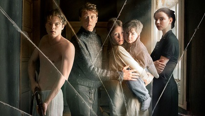

Marrowbone is a 2017 Spanish psychological horror mystery drama film written and directed by Sergio G. Sánchez, and starring George MacKay, Anya Taylor-Joy, Charlie Heaton, Mia Goth, and Matthew Stagg. The film tells the story of the titular Marrowbone siblings (MacKay, Heaton, Goth, and Stagg), who relocate from England to their mother's ancestral estate in Maine, where they are faced by a sinister presence in the home. Marrowbone was screened in the Special Presentations section at the 2017 Toronto International Film Festival and released in Spain on 27 October 2017, by Universal Pictures.
|